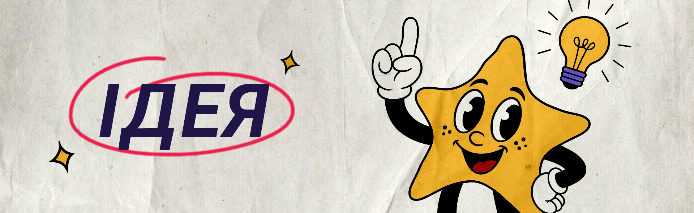
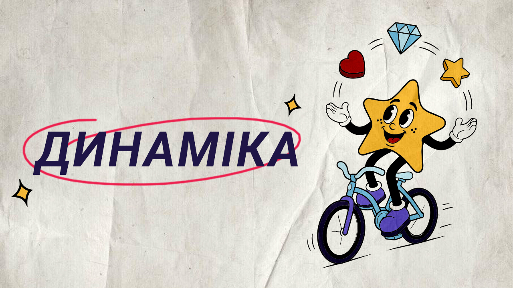
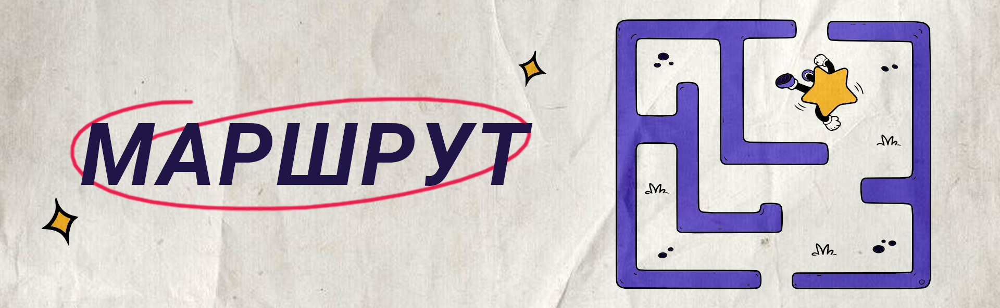
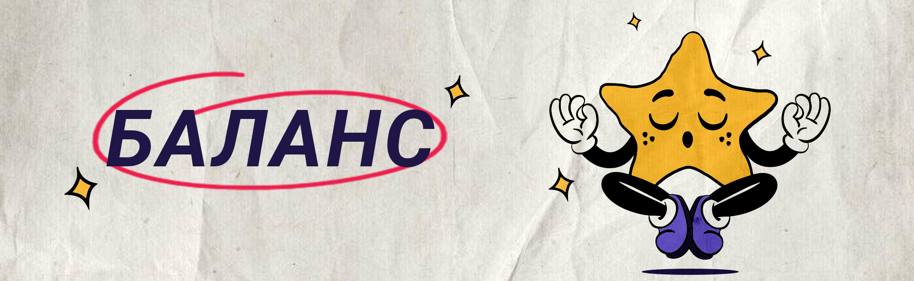
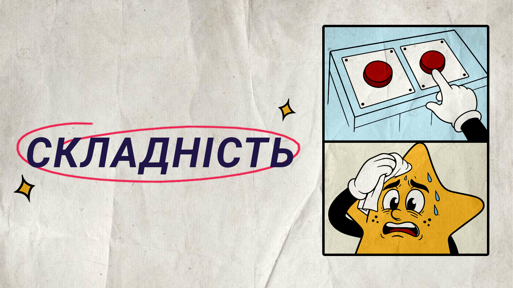
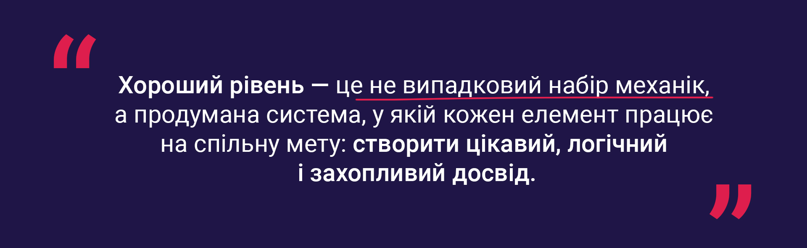

Почнемо з основи: хто такий Level Designer?
Level Designer — це спеціаліст, який проєктує ігрові рівні так, щоб вони були зрозумілими, захопливими та мотивували гравця повертатися в гру знову і знову. Його завдання полягає не просто в тому, щоб розмістити механіки на полі, а в тому, щоб побудувати цілісний ігровий досвід.
Хороший рівень має утримувати увагу гравця, поступово розкривати механіки, формувати відчуття прогресу й давати бажання пройти ще хоча б один рівень.
Для цього Level Designer повинен враховувати багато факторів: цілі рівня, темп проходження, баланс ресурсів, складність і логіку взаємодії елементів між собою.
То яким же має бути хороший ігровий рівень?
Якщо говорити про ключові характеристики, то якісний ігровий рівень зазвичай має п’ять основних складових: ідею, динаміку, маршрут, баланс і складність.

Кожен ігровий рівень повинен мати чітку ідею. Коли Level Designer отримує набір механік, його завдання — побудувати рівень так, щоб гравець розумів, які дії потрібно виконувати для досягнення результату, і водночас бачив логіку того, що відбувається на полі.
Створення рівня можна порівняти з написанням сценарію: у ньому не повинно бути зайвих елементів, які не працюють на загальну мету. Кожна механіка має виконувати свою функцію, розкриватися в процесі гри та впливати на перебіг подій.
Наприклад, якщо після активації елемент вибухає, цей вибух повинен не просто створювати ефект, а змінювати ситуацію на полі, відкривати нові можливості або наближати гравця до виконання цілі. У хорошому рівні кожна подія має сенс.

Рівень повинен бути динамічним. Це означає, що гравець має відчувати розвиток ситуації з кожним ходом. Якщо протягом тривалого часу на полі нічого суттєво не змінюється, інтерес до проходження швидко знижується.
Хороша динаміка створює відчуття руху вперед: гравець бачить результати своїх дій, розуміє, що просувається до фіналу, і відчуває зростання напруги ближче до завершення рівня. Саме це формує емоційне залучення та бажання спробувати ще раз, навіть у разі поразки.
Якщо рівень побудований вдало, гравець після невдачі не відчуває безсилля — навпаки, у нього залишається відчуття, що до перемоги бракувало зовсім небагато.

Ще одна важлива характеристика — наявність зрозумілого маршруту. Під час проходження рівня гравець має розуміти, у якому напрямку рухатися, які цілі є пріоритетними та які дії приведуть його до перемоги.
Коли в рівні немає чіткої логіки руху, з’являється фрустрація. Гравець починає діяти навмання, втрачає ресурс і не отримує задоволення від процесу. Саме тому важливо, щоб рівень інтуїтивно підказував послідовність дій.
Навіть якщо гравець програє, він повинен розуміти, що саме пішло не так: яку ціль не встиг виконати, який крок був неефективним і яку тактику варто спробувати наступного разу. Це дає відчуття контролю над ситуацією і підтримує інтерес до гри.

Баланс — одна з найскладніших частин роботи Level Designer. У більшості ігор гравець має обмежені ресурси: ходи, час, енергію або інші обмеження. Завдання дизайнера — побудувати рівень так, щоб ці ресурси витрачалися поступово й обґрунтовано.
Якщо гравець змушений витратити майже весь ресурс на одному етапі, решта рівня починає сприйматися як несправедлива або неможлива. У результаті негативний досвід переноситься не лише на конкретний рівень, а й на гру загалом.
Тому важливо, щоб кожна ділянка рівня мала адекватне навантаження, а складні моменти не руйнували загальну динаміку проходження. Добрий баланс створює відчуття виклику, але не безвиході.

Складність — ключова характеристика будь-якого ігрового рівня. Саме вона визначає, наскільки довго гравець зберігатиме інтерес до гри.
Якщо рівні занадто прості, гравець швидко втрачає мотивацію, тому що перестає отримувати новий досвід і не відчуває інтелектуального виклику. Якщо ж рівні надто складні, гра починає викликати втому, роздратування і бажання припинити проходження.
Тому важливо не лише налаштовувати складність окремого рівня, а й правильно чергувати рівні між собою. Зміна темпу, нові комбінації механік, чергування простіших і складніших етапів допомагають підтримувати інтерес гравця в довгостроковій перспективі.
Отже…
Робота Level Designer — це поєднання аналітики, креативності та глибокого розуміння поведінки гравця.

Саме тому Level Designer не просто створює рівні — він формує шлях, яким гравець проходить крізь гру, і визначає, чи захоче той зробити ще одну спробу.